Berühmte
Künstler in der Papp László Budapest
Sportarena
Vom Stadtzentrum
am Deák tér Platz, wo sich alle drei U-Bahnlinien
von Budapest kreuzen, erreicht man die Sportarena in ca. 15 Minuten mit
der U-Bahnlinie 2. Voraussichtlich im Jahre 2012 wird eine
vierte
U-Bahnlinie dem Verkehr
übergeben. Sie fährt nicht über den
Deák tér Platz
im Stadtzentrum.
Vom
Flughafen Budapest
liegt die "Papp László
Budapest Sportarena" etwa 15 km entfernt. Für die
Fahrt vom Flughafen zur Sportarena benötigt man
tagsüber eine
rd. 30-Minuten-Fahrt mit dem PkW. Es gibt an der Arena rd.
1.500
überdachte und überwachte Parkplätze -
für die Zuschauerkapazität
sicherlich ausreichend.
Papp
László
Budapest Sportarena
Die
multifunktionale Sportarena von Budapest hat eine
Zuschauerkapazität für 12.500 Personen und wurde nach
der Boxlegende László Papp (1926-2003)*
benannt. Die
Arena ist bedeckt. Auf
dem Dach befinden sich eine Parkanlage, sowie eine Terrasse
mit Café und Restaurant, ferner ein
Sportmuseum. Adresse:
Stefánia út 2, 1143
Budapest.
*László
Papp war der erste Boxkämpfer, der bei
drei aufeinanderfolgenden Olympischen Spielen Goldmedaillen gewann.
1948 im Mittelgewicht, 1952 und 1956 im Halbmittelgewicht. Seine
ebenfalls sagenhafte Profikarriere beendete er 1964 und arbeitete bis
zuletzt als Trainer. Die meisten seiner Kämpfe in Ungarn
bestritt
er im sog. "Sportcsarnok", dem deutlich kleineren Vorgänger
dieser
Sportarena auf der anderen Seite des benachbarten Ferenc
Puskás
Fussballstadions.
Wichtige Konzerttermine in
der Papp László Budapest Sportarena
André Rieu 31. Mai
2014 / Samstag 20:00 (?) Uhr Papp
László Budapest Sportaréna Adresse:
Stefánia út 2, 1143 Budapest http://en.budapestarena.hu/html/
Zuschauermagnet
André
Rieu (geb. 1949) und sein Orchester sorgen für volles Haus
weltweit
überall, wo sie
auftreten, so wie im folgenden Video aus dem Jahr
2008 in Tirol. Auch in Budapest werden lustige landestypische und
weltweit
bekannte Melodien gespielt, sicherlich nicht nur aus der
Operette Tschardaschkönigin oder über Piroschka aus
der Pußta. - Das
Repertoire von André Rieu ist enorm breitgefächert
und steckt voller
Überraschungen...
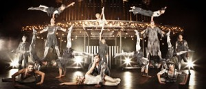Cirque du Soleil - Michael Jackson The Immortal 05. und 06.
Februar 2013 / Dienstag und Mittwoch 19:00 Uhr Papp
László Budapest Sportaréna Adresse:
Stefánia út 2, 1143 Budapest http://en.budapestarena.hu/html/
Lionel Richie 21. November
2012 / Mittwoch 19:00 Uhr Papp
László Budapest Sportaréna Adresse:
Stefánia út 2, 1143 Budapest http://en.budapestarena.hu/html/
Weltweit bekannte Schlager,
wie "Say, You, Say, Say Me", Dancing on the Ceiling", all Night Long
and "Easy" sind vielen Musikfans im Mund. Die Karriere von Lionel
Richie (geb. 1949) dauert nun rd. 30 Jahre an. Rd. 100 Millionen
verkaufte Platten und 50 Auszeichnungen, darunter 5 Grammies, ein Oscar
und ein Golden Globe sind Markenzeichen des Musikers aus Alabama/USA.
Omega 50 Aréna Koncert 06. Oktober
2012 / Samstag 19:00 Uhr Papp
László Budapest Sportaréna Adresse:
Stefánia út 2, 1143 Budapest http://en.budapestarena.hu/html/
Die Omega Band feiert ihr
50jähriges Bestehen im Herbst 2012. Entstanden aus
Erstsemestern der Universität "Közgáz",
gegründet mithilfe der staatlichen Obrigkeiten blieb die Band
regimetreu und bestand so am längsten in der ungarischen
Rockszene. Laufender Personalwechsel charakterisiert die Gruppe, die durch die langen Jahre ihres
Bestehens unter den ungarischen
Musikgruppen die meisten nationalen und internationalen
Erfolge verbuchen konnte....
Illés Lajos
életmü koncert 22. September
2012 / Samstag 19:00 Uhr Papp
László Budapest Sportaréna Adresse:
Stefánia út 2, 1143 Budapest http://en.budapestarena.hu/html/
Zuschauermagnet und Band der 1960er und 70er Jahre in
Ungarn war die Illés Band (Bild rechts). Bandleader
Lajos
Illés (1942-2007) spielte am Klavier und komponierte die
populärsten Lieder der Band, die den Ungarn auch heute noch
im Munde sind. Die Veranstaltung am 22. September 2012 in der Papp
László Budapest Sportaréna soll die
Erinnerung an das Lebenswerk des großen Künstlers
erwecken.
André Rieu 05. Mai
2012 / Samstag 19:00 Uhr Papp
László Budapest Sportaréna Adresse:
Stefánia út 2, 1143 Budapest http://en.budapestarena.hu/html/
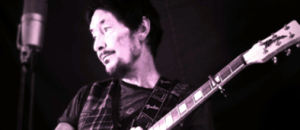 Chris Rea 15. Februar
2012 / Mittwoch 20:00 Uhr Papp
László Budapest Sportaréna Adresse:
Stefánia út 2, 1143 Budapest http://en.budapestarena.hu/html/
Christopher
Anton Rea, Künstlername: Chris Rea, (Jg. 1951) ist
ein
britischer Sänger, Musiker, Komponist und Gitarrist
italienisch-irischer Abstammung.
Sein größter Hit:
Looking for the Summer erreichte Platin im Jahre 1991 in Deutschland
und zweimal in Großbritannien. Mit seiner Europatournee 2006
wollte sich Rea nach beinahe 30 erfolgreichen Jahren, die ihm weltweit
Schallplattenverkäufe von nahezu 30 Millionen Alben und
Singles
gebracht hatten verabschieden. Zur Präsentation eines
Livemitschnitts der Abschiedstour, der auf DVD erschienen ist, spielte
er im Herbst 2006 ein Konzert in London, welches als
„Allerletztes Live-Konzert“ angekündigt
war. Allerdings holte die Lust auf der Bühne zu
stehen, und
live zu spielen Chris Rea im Jahr 2010 zurück auf eine Tournee.
Konzert Top-Verdiener des
Jahres 2011
Konzert
Rocker U2 sind Top-Verdiener des Jahres mit 232 Millionen Dollar;
Take
That kassierte 224 Millionen Dollar;
Bon
Jovi ist mit 148,2 Millionen Dollar deutlich abgeschlagen, steht jedoch
noch immer weit vor dem Rest der Welt.
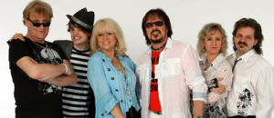 Neoton Familia 27. Dezember
2011 / Dienstag 20:00 Uhr Papp
László Budapest Sportaréna Adresse:
Stefánia út 2, 1143 Budapest http://en.budapestarena.hu/html/ Eine
in Ungarn gut bekannte Popgruppe, die in den
Jahren 1965
bis 1992 in laufend wechselnder Besetzung auftrat.
Populär
waren sie immer und sie konnten sich in dieser Zeit auch im Ausland
manche
Erfolge verbuchen. Ihre traurig-melankolischen Lieder wiederspiegeln
noch immer die Stimmung der überwiegenden Mehrheit der
Bevölkerung im eigenen Lande - passend in die
nachweihnachtliche
Tote-Hose-Zeit. Sie werden weiterhin verlangt und treten mit ihren
Nostalgiekonzerten vor großem Publikum auf, zuletzt in den
Jahren 1998 und 2005 im größten
Fußballstadion des
Landes, im Ferenc Puskás Stadion, wo bis zu 95.000 Zuschauer
Platz finden - nun in der Papp
László Budapest Sportarena mit einem
Fassungsvermögen von 12.500 Zuschauern.
Rihanna in Konzert 08. Dezember
2011 / Donnerstag 20:00 Uhr Papp
László Budapest Sportaréna Adresse:
Stefánia út 2, 1143 Budapest http://en.budapestarena.hu/html/
Robyn
Rihanna
Fenty (geb. 1988 auf
Barbados), bekannt unter ihrem Künstlernamen Rihanna, ist eine
barbadische R&B-Sängerin mit Einflüssen von
Hip-Hop, Pop, Dance und Soca. Rihanna ist mehrfache Grammy-Preisträgerin.
Ihre bisherigen fünf Alben verkauften sich weltweit
über 25 Millionen Mal, die dazugehörigen
Single-Auskopplungen bisher über 75 Millionen Mal.
Tom
Jones 22.
November 2011 / Dienstag 20:00 Uhr Papp
László Budapest Sportaréna Adresse:
Stefánia út 2, 1143 Budapest http://en.budapestarena.hu/html/
Sir Thomas John Woodward, Order of the British Empire
(OBE),
geb. 7. Juni 1940 in Trefforest-Pontypridd in
Wales/Vereinigtes
Königreich, bürgerlicher Name: Tom Jones. Er ist ein
walisischer
Popsänger.
Tom
Jones war ursprünglich Staubsaugervertreter, versuchte aber
schon 1963 eine Karriere als Sänger mit der Beat-Band
„Tommy Scott with the Senators“. In jenem Jahr nahm
er insgesamt sieben Stücke in Joe Meeks Studio auf, die aber
erst 1965, nach seinem ersten großen Erfolg,
veröffentlicht wurden. Die Band war nicht sehr erfolgreich und
so entschloss sich Jones zu einer Solokarriere. Sein womöglich
bekannteste Solotitel aus letzter Zeit heißt Sex Bomb und ist
von 1999, aber auch danach ist er aktiv geblieben. Der wegen seiner
gewaltigen Stimme auch unter dem
Namen Tiger
bekannte Popstar landete weitere Hits, wie z.B. 2004 She´s a
Lady, 2009 Give a Little Lady und Island in the Stream. Letztere
landete in den UK-Charts auf Platz 1.
2006
wurde Tom Jones von
Königin Elisabeth II. zum Knight
Bachelor geschlagen. Durch
seine Nobilitierung heißt er jetzt Sir
Thomas.
- Im November 2008 veröffentlichte Tom Jones sein 25.
Studioalbum, 24 Hours. Für dieses Album
war Tom Jones erstmals selbst als Songschreiber tätig. Kara
DioGuardi steuerte mit Give a Little Love ein
Stück bei, und mit The Hitter von Bruce
Springsteen findet sich ein weiterer Coversong auf dem Album.
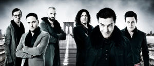 Rammstein -
zum vierten Mal in der Aréna 10.
November 2011 / Donnerstag 20:00 Uhr Papp
László Budapest Sportaréna Adresse:
Stefánia út 2, 1143 Budapest http://en.budapestarena.hu/html/
Rammstein
ist eine deutsche Rockband, die 1994
in Berlin
gegründet wurde und musikalisch zur Neuen Deutschen
Härte gezählt wird. Ihre Kennzeichen sind ein
beispielsweise als „brachial“ beschriebener
Musikstil, den die Bandmitglieder selbst
„Tanzmetall“ nennen, häufig kontrovers
diskutierte Texte, aufgrund derer der Band unter anderem die
Verharmlosung des Nationalsozialismus und Gewaltverherrlichung durch
Einsatz von pyrotechnischen Elementen bei Konzerten vorgeworfen wurde.
Der musikalische Stil der Band wurde unter anderem von der slowenischen
Band Laibach beeinflusst. Bis heute verkaufte Rammstein über
15 Millionen Tonträger und ist trotz deutschsprachiger Texte
auch in Ländern wie zum Beispiel den Vereinigten Staaten
kommerziell erfolgreich. Das jüngste Studioalbum der Band Liebe
ist für alle da erschien am 16. Oktober
2009.
Britney
Spears - Femme Fatale Tour 30.
September 2011 / Freitag 20:00 Uhr Papp
László Budapest Sportaréna Adresse:
Stefánia út 2, 1143 Budapest http://en.budapestarena.hu/html/
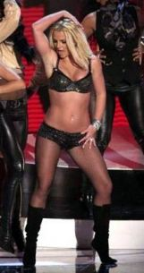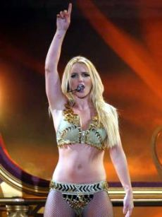Britney
Jean Spears (geb. 1981 in Mississippi) ist
eine US-amerikanische Popsängerin. Sie
verkaufte in weniger als zehn Jahren mehr als 100 Millionen Alben und
84 Millionen Singles, in den USA rangiert sie in der Rangliste der
weiblichen Interpreten mit den meisten Albumverkäufen auf
Platz acht. Britney ist das
mittlere von drei Kindern des Bauunternehmers James Parnell
Spears und der Lehrerin Lynne Irene Bridges. Sie hat einen
älteren Bruder sowie eine jüngere Schwester
namens Jamie Lynn. Sie wuchs
in Kentwood/Louisiana auf. Zusammen mit dem
Tänzer Kevin Federline hat sie zwei
Söhne. Am
1. Februar 2008 wurde sie
von einem Gericht in Los Angeles entmündigt. Dieser Zustand
soll voraussichtlich bis Ende 2011 andauern. Ihr Vater wurde
vom Gericht als Vormund eingesetzt und
verfügt gemeinsam mit einem Anwalt zukünftig
über das Vermögen der Multimillionärin.
Derzeit lebt Spears in Beverly Hills, LA/Cal.
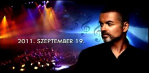George Michael 19. September 2011 /
Montag
20:Uhr Papp
László Budapest Sportaréna Adresse:
Stefánia út 2, 1143 Budapest http://en.budapestarena.hu/html/ Georgios
Kyriakos Panagiotou, mit Künstlername: George Michael (geb.
1963
in London) ist ein britischer Sänger, Komponist, Musiker und
Produzent griechisch-zypriotischer und englischer Abstammung. Er lebt
in Highgate im Norden von London. Zu seinen größten
Erfolgen
zählen Welthits, wie -
Wake Me Up Before You
Go Go, -
I’m Your Man und -
Last Christmas. 2004 gab
Michael bekannt, dass sein Album Patience sein
letztes
kommerziell vertriebenes Werk sein würde. 2005
stellte Michael auf der Berlinale die autobiografische Dokumentation "A
Different Story" vor und kündigte an, sich aus dem
Musikgeschäft zurückzuziehen. Im
Frühjahr 2006
kündigt George Michael mit 25 Live seine erste Tour
seit 1991
an, die ihn unter anderem auch nach Deutschland
führte. Zuletzt
fiel
Michael mit seinen Alkohol- und Drogenexzessen auf und erhielt im Jahre
2010 seine Strafe. Nach Verbüßung von knapp
vier Wochen
Haft (Hälfte der Strafe) wurde er am 11. Oktober 2010
vorzeitig
aus dem Gefängnis entlassen, sein Führerschein wurde
auf 5
Jahre entzogen. Dass seine Karriere weitergeht, davon zeugt
sein
Auftritt in der Papp László Budapest Sportarena.
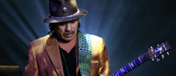Carlos Santana in Konzert 05. Juli
2011 / Dienstag 20:00 Uhr Papp
László Budapest Sportaréna Adresse:
Stefánia út 2, 1143 Budapest http://en.budapestarena.hu/html/
Carlos Augusto Santana Alves
(geb. 1947) ist ein mexikanischer Musiker und Gitarrist, der durch
seine Musikrichtung des Latin Rock die Rockmusik
um eine neue Variante erweitert hat. Auf der Suche
nach sich selbst, schloss sich Santana
zeitweilig Anfang der 1970er-Jahre, wie viele andere zu dieser
Zeit, auf der
spirituellenindischen Guru, Sri
Chinmoy, an. Dort fand er sein Lebensmotto: Wir sind alle
eins. Seit Anfang der 1990er-Jahre war er mit seiner Frau Deborah in
einer christlichen Gemeinde
aktiv. 2007 wurde die
Ehe nach 34 Jahren geschieden. Zu dem Zeitpunkt
hatten sie drei Kinder im Alter von 17, 22 und 23
Jahren. Gemeinsam
hatten sie sich seit Jahrzehnten im
sozialen Bereich engagiert. Mitte der 90er-Jahre gründeten sie
mit der Milagro Foundation eine gemeinnützige Stiftung, die
sich dafür einsetzt, dass benachteiligte Menschen eine
Schulbildung erhalten. Für ihr Engagement wurden die beiden
mit zahlreichen Ehrungen bedacht. So ernannte zum Beispiel die
Stadtverwaltung San Franciscos 1987 den 6. Juni zum Santana-Tag. Am 9.
Juli
2010 gaben Santana und Cindy Blackman (Bild rechts) während
eines Konzerts
seiner Universal Tone Tour in Chicago bekannt, demnächst zu
heiraten. Die Hochzeit fand am 21. Dezember auf Maui statt. Cindy
Blackman
(Jg. 1959) begann ihre Karriere als Straßenmusikerin in New
York
City, war ein Jahr lang College Student for Music in Boston
und spielt auch
Guitar. Sie war 10 Jahre lang Lenny
Kravitz´s Schlagzeugerin. Ihre Besondere
Fähigkeit ist, dass sie zwischen Jazz und Popmusik nahtlos
überspringen kann. 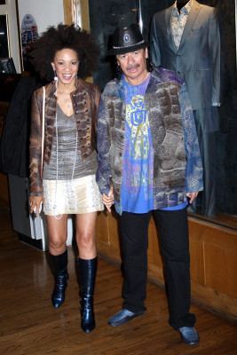 Bild
links: Die
Gitarristen Carlos Santana und John McLaughlin haben am Freitagabend
(01.07.2011) das traditionsreiche, immerhin schon 45. Montreux Jazz
Festival eröffnet. Bei dem 16 Tage dauernden Musik-Event
werden
mehr als 350 Künstler erwartet.
In
der Stadt am Genfer See in der Schweiz werden in den kommenden 16 Tagen
etwa 220 000 Besucher erwartet. Im Programm sind Auftritte von Arcade
Fire, Sting, B.B. King, Liza Minnelli, Paul Simon oder auch Deep Purple
angekündigt.
Nur
4 Tage später hat Santana seinen Auftritt in Budapest.
Die
aktuelle Tour läuft unter der Bezeichnung Guitar Heaven.
Carlos Santana war schon öfter in Budapest und er brachte auch
dieses Mal seinen Koch mit. Seine Einkaufsliste ist lang und
vielseitig. Darauf stehen nur wenige
Getränke, verschiedene
Bäckereiprodukte, wie Croissan, Baguette, Ciabatta und
Muffins,
außerdem viele ungarische
Landesspezialitäten, viel
Obst, Ingwer und die Grundlagen für Salate.
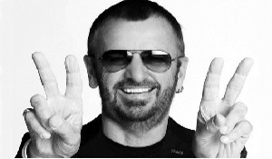 Ringo Starr in Konzert 28. Juni
2011 / Dienstag 20:00 Uhr Papp
László Budapest Sportaréna Adresse:
Stefánia út 2, 1143 Budapest http://en.budapestarena.hu/html/ Der legendäre
Schlagzeuger Ringo
Starr (Richard Henry Parkin Starkey
Jr., geb. 1940 in Liverpool)wuchs im Liverpooler
Hafenviertel Dingle auf. Bevor er sich den
Beatles anschloss, war er von 1959 bis 1962 Schlagzeuger bei der
Liverpooler Band Rory Storm & The Hurricanes.
Ursprünglich ein
Schauspieler, Bekanntheit erlangte er als
Mitglied der Band The Beatles, der er vom
16. August 1962 bis zu deren Auflösung im
Jahre 1970
angehörte. 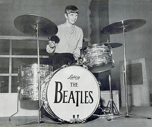
Da die Bands
sich
sowohl im Cavern Club in Liverpool, als auch bei ihren Auftritten im
Hamburger Star
Club oft
ablösten und auch untereinander aushalfen, hatte er bereits in
dieser Zeit engen Kontakt mit John Lennon, Paul McCartney und
George
Harrison.
Ringo war nie zufrieden mit dem Hinweis, er ist ein von den Beatles.
Obwohl die meisten Lieder von John Lennon und Paul McCartney
geschrieben und vor den vielen Auftritten so angekündigt
waren,
Ringo
war schon immer ein Markenzeichen der legendären Musikgruppe.
Auf
jedem Beatles-Album hinterließ er seinen Stempel mit einem
populären Song, wie: With A Little Help From My
Friends, Don´t Pass Me By, Photograph, It
Don´t Come
Easy.....
Ringo Starr
absolviert als
Sänger, Schlagzeuger und Songwriter eine nach wie vor
erfolgreiche
Solokarriere. Mit seinen
Soloaufnahmen und Tourneen spielt er weiterhin eine
wichtige Rolle in der
zeitgenössischen Musik. Auch
als engagierter Gastmusiker
und als Schauspieler hat sich Ringo immer
wieder hervorgetan. Inspirieren
lässt sich der Musiker vom
klassischen Blues, von Soul, Country, Honky-Tonk und Rock&Roll
gleichermaßen. Der
zweieinhalb stündige Aftritt in Budapest ist eine Kette seiner
aktuellen Solotournee, wo er von seiner Vielseitigkeit jeden
Fan bestimmt überzeugen wird.
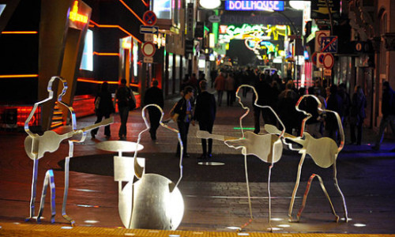
Bild
rechts: Der Beatles Platz in Hamburg,
im
Hintergrund die Grosse
Freiheit.
In Hamburg
tritt er am 07.07.2011 im Stadtpark auf, weitere
Stationen seiner lfd. Tournee sieht man hier:
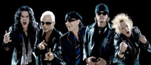 Scorpions
in Konzert 06. Juni 2011 /
Montag 20:00 Uhr Papp
László Budapest Sportaréna Adresse:
Stefánia út 2, 1143 Budapest http://en.budapestarena.hu/html/
"Schluss" ist
das
Motto der
Abschiedstournee der legendären Rockgruppe Scorpions. Sie sind
eine deutsche Hard-Rock-/Heavy-Metal-Band
aus Hannover. ** Die erfolgreichste Besetzung
der Scorpions waren Francis
Buchholz (Bass), Klaus
Meine (Gesang), Matthias
Jabs(Gitarre), Rudolf Schenker (Gitarre)
und Herman Rarebell (Schlagzeug). In dieser Besetzung
veröffentlichten sie Rockhits wie Rock You Like a
Hurricane, Big City Nights, No One Like
You und Balladen wie Still Loving You, Send
me an Angel und Wind of Change, die international bis heute zu
den Rockklassikern gezählt werden.
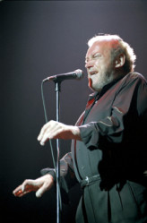Joe
Cocker in Konzert 05. Juni 2011 / Sonntag 20:00
Uhr Papp
László Budapest Sportaréna Adresse:
Stefánia út 2, 1143 Budapest http://en.budapestarena.hu/html/
Erstmals aufgefallen am Woodstock Festival im Jahre 1969 kann Joe
Cocker auf eine gut vier Jahrzente anhaltende Erfolgskarriere
zurückblicken. Der Veteranrocker stellt sein
neuestes, im Herbst 2010
veröffentlichtes Plattenalbum mit dem Titel "Hard
Knocks" vor. Budapest ist eine Station
seiner im letzten
Herbst begonnenen Konzerttournee. Andere Stationen seiner
Plattentournee sind London, Paris
und Wien, bevor er am 05.06.2011 in Budapest auftritt.
In früheren Jahren
traten praktisch alle berühmten Künstler
in dieser
Sportarena auf, wie z.B. Lady Gaga, Beyoncé
Knowles, Kylie
Minogue, Shakira, Liza Minelli, Eros Ramazzotti, Anastacia, Andrea
Bocelli, David Copperfield, Pink, Robbie Williams, Paul McCartney und
viele andere.
Sie
wollen endlich einmal nach Budapest und suchen eine komfortable
Ferienwohnung, Ferienapartment oder Ferienzimmer,
dann sind
Sie hier richtig. Wir vermieten 1-4-Zimmer Ferienwohnungen an
bis zu 8 Personen.